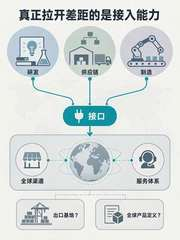
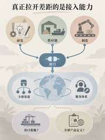
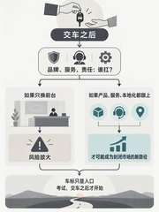
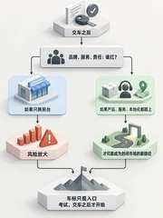
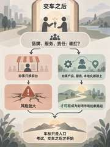
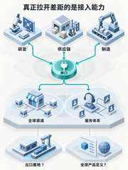
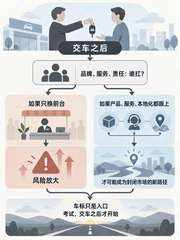
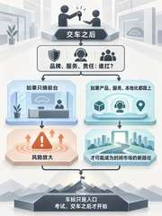

Supplemental chat-level evidence only. This is not Seedream/Ark provider evidence and does not change the formal SC-008 Seedream/Ark live-image ledger (0/6).
Accepted-profile controlled set: 6/6 PASS. Draft extension: 4/4 PASS; c04-editorial-flat shows stronger independent appearance value, while mechanical-tech-business is PASS / WEAK differentiation and remains draft.

SC008-AP-001 · GS01
clean-strategic-editorial · PASS
结构清楚，标题、三源、唯一接口、双承接与底部双开放问题均守住；编辑型业务图感稳定。
Prompt SHA-256: adf5f46e515facaf3c8db0136607779605b4c8f2290891a4c925825ca8bbedf5
Derived thumbnail SHA-256: ec45e72189985861e51852621a1277dd987d6ce29b78a5e12231c4adff1e199e
SC008-AP-002 · GS01
clean-isometric-business · PASS
模块化和轻 3D 结构清晰，可核验性强；profile differentiation 明显。
Prompt SHA-256: 44a86e9a361ff8a625ad8311d1247c2a4174efbed4d58d995e255b64754a1ecc
Derived thumbnail SHA-256: ff479c2f2b98f0ccd69c5ca48ec63029db1b7886ef346cdd40f7c865f9588826

SC008-AP-003 · GS01
soft-narrative-editorial · PASS
Safe+Raised hard core 保持；柔和叙事气质成立，氛围化略强但未越过可接受边界。
Prompt SHA-256: 51e64581649a264829436ca4cd1b096b1700777df2f8dd2833cadf988b278e25
Derived thumbnail SHA-256: cdbec195fb4ef2849699cc1d9a1e08e1b1615896d72b5ea6db733fbeb5d488d6

SC008-AP-004 · GS08
clean-strategic-editorial · PASS
共同起点、双条件—结果绑定与最终收束清楚；关键文字与限定词均守住。
Prompt SHA-256: d115af9cf6c973e81e2e1c6e62dc8e3cac789d76254f36975a5e1878fec436fc
Derived thumbnail SHA-256: 7477616817eb189965deb790fe23ccc5a885a37d0781c1e57e1a178088cdfd6e

SC008-AP-005 · GS08
clean-isometric-business · PASS
局部模块稳定、分支清楚，可核验性强；属于 GS08 较稳定样本。
Prompt SHA-256: 2b21b78f8e5a77ff2604937a6f0db770c8e66cf768333119998dc28648f828ba
Derived thumbnail SHA-256: 57c408356434f4d779fdccf299466f20db10e72f7dcb398fed32799f82873793

SC008-AP-006 · GS08
soft-narrative-editorial · PASS
条件、结果与共同结论链路成立；叙事氛围更强，但未冲垮 hard core。
Prompt SHA-256: 2a32dd7dc60af5f8d07b6b966a801296d5b1529f28694f173e1029124da1cfe4
Derived thumbnail SHA-256: b9d02634dece558ae9e49480fd0a7d829b6e2ff5f3a6ecc24ce0f8791bdb335f
SC008-AP-007 · GS01
c04-editorial-flat · PASS
GS01 hard core 守住；flat editorial + clean-container 气质清晰，C04 独立 appearance value 较强。
Prompt SHA-256: 5f0006e0c0cac9d2c4ecbf5e02507e785400006fda88163ceab00f211dabe54a
Derived thumbnail SHA-256: 7a3606458600555d72332def61404ecb9baab306da14114220f168dfc22e592d

SC008-AP-008 · GS01
mechanical-tech-business · PASS / WEAK
hard core 守住，但更像技术化 isometric-business 变体；独立 family differentiation 偏弱。
Prompt SHA-256: 4633f733c5e14d0c053da1abc427a557aed4a21b656aba083a77236761a6e3d0
Derived thumbnail SHA-256: ef2e0847a721350e8173483c7329cfe7a35a238149222c636a34c526873a2a2c

SC008-AP-009 · GS08
c04-editorial-flat · PASS
GS08 文字、双分支和最终收束守得好；C04 editorial-flat 表达清楚，是扩展组较强样本。
Prompt SHA-256: 8774fb276e95969e307867eecba89bff51b1af18a6cdcb1e34d99545f1262118
Derived thumbnail SHA-256: b8c0b5c4a9208174979e7688ef1f166469b5566a1dd9cab52bdc3a6cd83d20c0

SC008-AP-010 · GS08
mechanical-tech-business · PASS / WEAK
语义和条件绑定守住；技术/机械家族辨识度一般，仍偏已有 business/isometric 语汇。
Prompt SHA-256: 53ffc231e5818a2509d7fa0e4a07669517532e5b32ba5156fcb22d4d31a43cb5
Derived thumbnail SHA-256: d250684359830a459760bc17615ac65aa4b7c756d5d1c510e0e8df7cad6cae52
{kind=link}
{kind=link}
{kind=link}
{kind=link}
{kind=link}
{kind=link}
{kind=link}
{kind=link}
{kind=link}
{kind=link}